Los mercados de Nueva York cerraron la sesión de hoy , viernes , con tendencias opuestas en sus dos principales índices : el Dow Jones , que acabó a la baja y el Nasdaq , que anotó un nuevo máximo histórico.
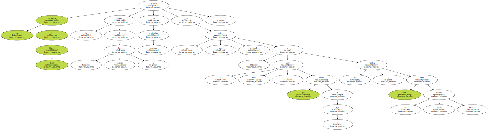Según cifras definitivas , el Dow Jones Industriales , que mide el cambio de 30 grandes empresas estadounidenses , perdió 49,64 unidades o un 0,45 por ciento a 10.963,80 puntos.
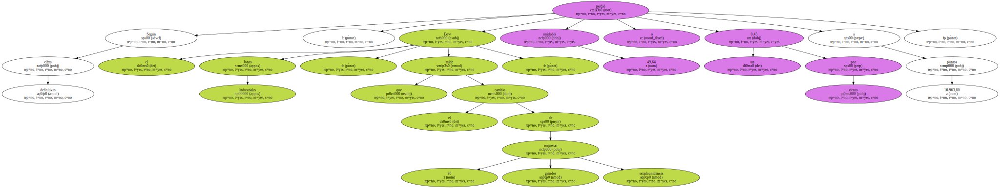El Nasdaq , en el que negocian la mayor parte de las firmas de nuevas tecnologías , ordenadores e Internet , escaló 33,16 puntos , o un 0,79 por ciento , a un nuevo récord de 4.244,14 puntos.
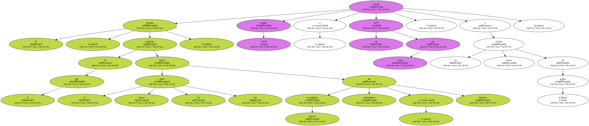El S & P500 , que evalúa 500 empresas , y que algunos analistas consideran más representativo del mercado que el Dow Jones , bajó 0,60 puntos , hasta los 1.424,37.
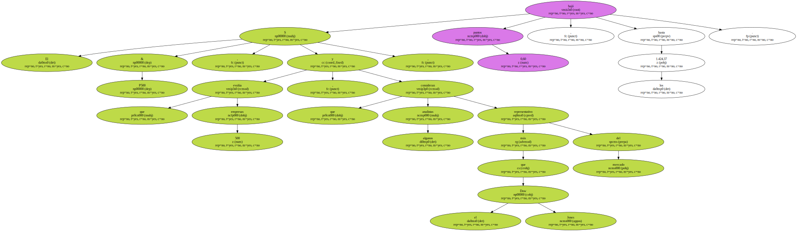El New York Stock Exchange , que valora las empresas tradicionales de Wall Street , perdió 2,73 , hasta los 626,90 puntos.
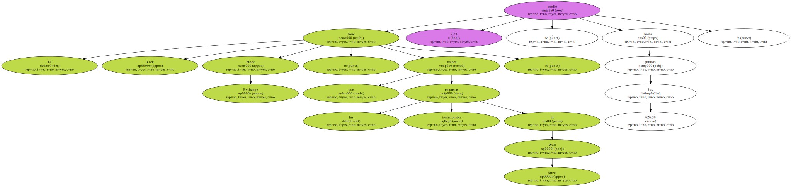El volumen de negocios fue de 1.032 millones de acciones y entre los títulos que cambiaron de manos , 1421 subieron , 1562 bajaron y 517 se mantuvieron sin cambios.
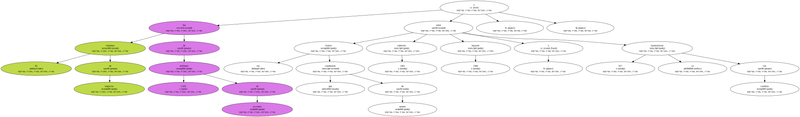Antes de la apertura de la bolsa el gobierno de los EEUU informó de las esperadas cifras del mercado laboral en enero.
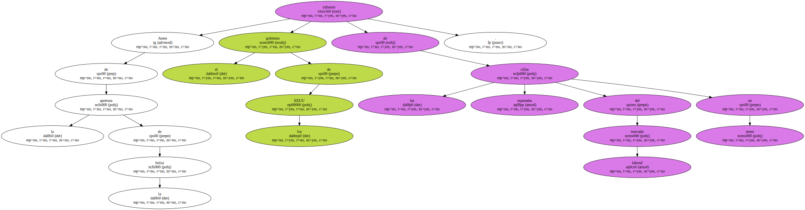Las cifras mostraron un aumento de 387.000 empleos , más de lo que esperaban los analistas y la mayor tasa de aumento de la fuerza laboral estadounidense en más de dos años.

Esta fuerte creación de empleos llevó la tasa de desempleo en los EEUU al 4 por ciento , el nivel más bajo desde enero de 1970 , desde el 4,1 por ciento de diciembre.
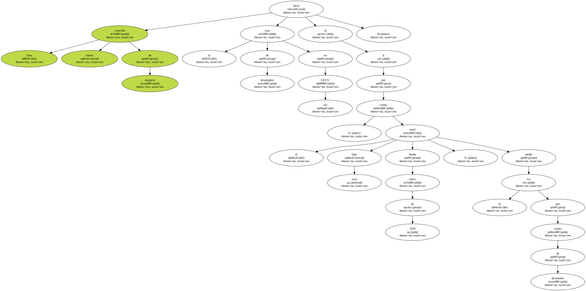Asimismo , las remuneraciones por hora crecieron 6 centavos de dólar , o un 0,4 por ciento , a 13,5 dólares ; alza que también supera las expectativas de los analistas.

Los analistas explican que estas cifras dan cuenta de un mercado laboral demasiado " apretado " , que puede ser un peligro para la estabilidad de los precios y que por lo tanto pude hacer que las autoridades sigan elevando los tipos en los meses próximos.
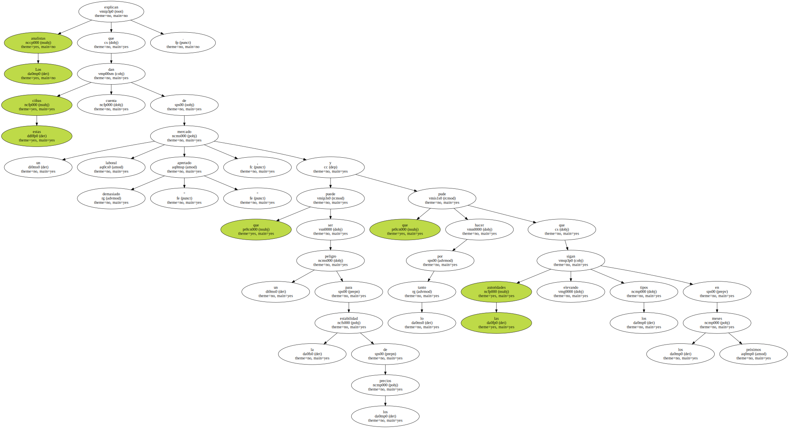Con tan poco desempleo - a juicio de los analistas un 4 por ciento de cesantía equivale a una situación de pleno empleo - las empresas ya han empezado a ofrecer incentivos para sus empleados , como computadores gratis , gimnasios en las industrias y hasta coches deportivos para algunos ejecutivos.
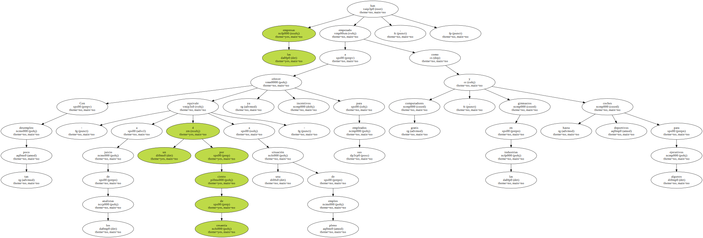Asimismo se asume que los sueldos deben empezar a subir , todo lo que se traduciría en mayores costos para las empresas , costos que podrían ser traspasados a los consumidores en forma de un alza de precios que traiga consigo una subida de la inflación.
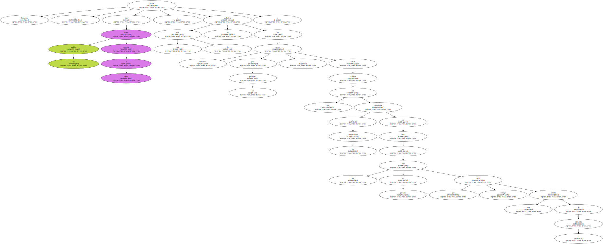Sin embargo , muchos analistas explican que el hecho de que la economía crezca tanto no implica un aumento de la inflación , pues argumentan que el aumento de la actividad se debe a las mejoras de la productividad de los trabajadores , derivadas del cambio tecnológico.
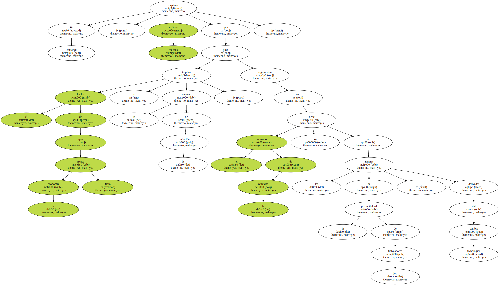Por ello , algunos analistas , aunque no dudan de nuevas alzas de tipos , creen que estas serán más bien moderadas , y que no afectarán seriamente a la bolsa.
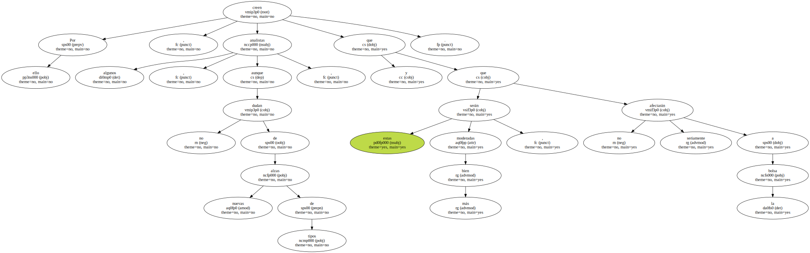Las previsiones más optimistas sobre el futuro de las tasas y de la marcha de la economía estadounidense , así como el buen rendimiento de algunas empresas de nuevas tecnologías , permitieron que el Nasdaq cerrara en el nivel más alto de su historia.
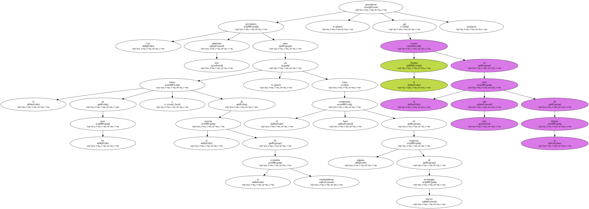El mercado de bonos también se vio sacudido por las cifras de empleo , que arrastraron a la baja el precio de los bonos de 30 años tras varias sesiones de fuertes alzas por factores técnicos de perspectivas de oferta y demanda de estos bonos.
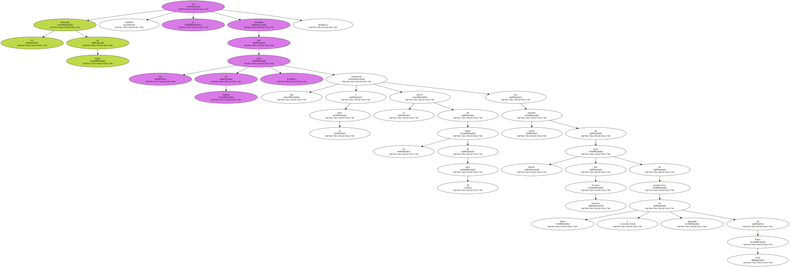Hace algunas semanas las autoridades anunciaron que disminuirán el volumen de emisión de estos títulos , al tiempo que aumentarán su recompra.
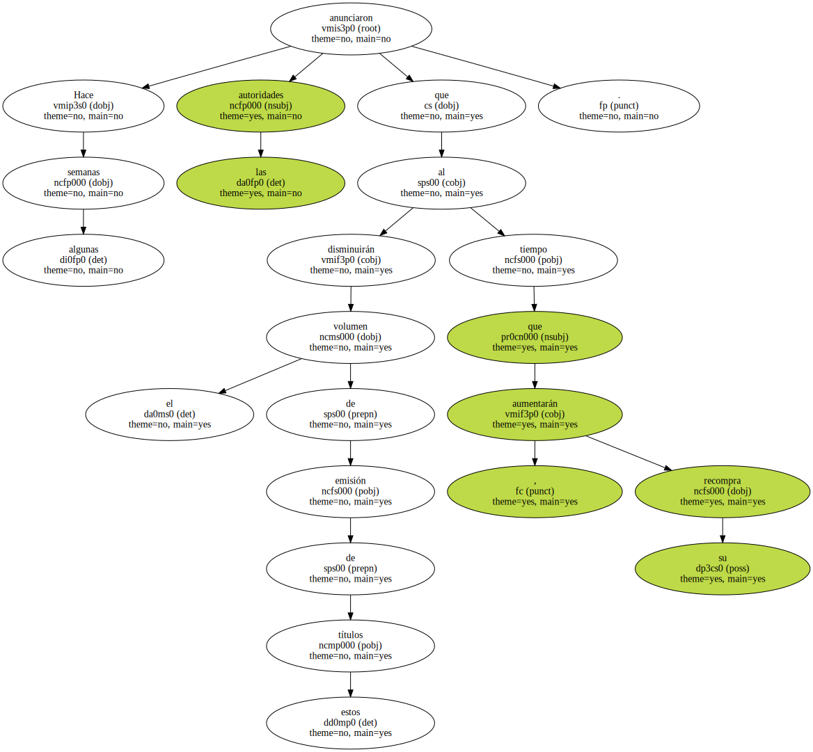A juicio de muchos analistas , la nueva política del Gobierno para con los títulos de 30 años hace pensar en que estos títulos pronto dejarán de ser el mejor indicador de las tendencias futuras de la inflación , y que en su preponderancia serán reemplazados por los bonos a 10 años.
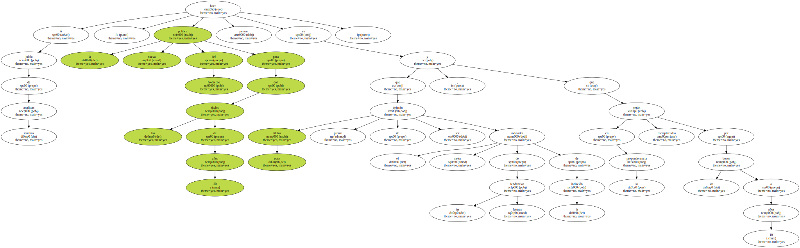Los bonos a 30 años cerraron con su tasa en el 6,27 por ciento desde el 6,14 por ciento del cierre de ayer.
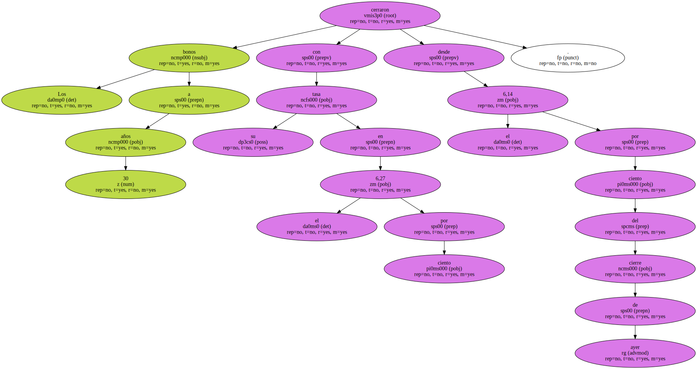